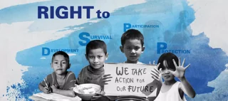

Understanding the Other
When people don’t understand each other, or don’t pay attention to what someone is saying, often arguments begin and can lead to fights and discrimination too.
Everybody is different, but we are all equal. Sometimes people are hurt or left out just because they have a different religion, can’t do the same things others around them can do, are too small to be in the team, find school work difficult, or are always the best and others don’t feel good enough.
How does it feel when people don’t play with you, call you silly names, are mean to you, bully you?
Do others know what you really like doing? What you’re very good at? Do they really know who you are? How well do you know the people you see most days?
Understanding the Other is about finding ways get to know and understand others and for them to get to know you better too and together, sharing ideas to improve the way things are is possible.
All young people should be living the rights they are entitled to. What you do and say can help make this more possible. Please don’t doubt yourself, whatever your age, your ideas count and should be respected.
The theme for the last International Children’s Day and the year that follows, this year, is Listen to the Future. Young people are the future leaders, workers, parents, inventors and more. You are the future and you need to be listened to! What do you want people to hear?
Janusz Korczak, the man whose work and life formed the foundation of the Convention on the Rights of the Child felt strongly about making sure young people were taken seriously.
“… primary and irrefutable right of children is the right to voice their thoughts, to
active participation in our considerations and verdicts concerning them. When we
have gained their respect and trust, once they confide in us of their own free will
and tell us what they have the right to do – there will be fewer puzzling moments,
fewer mistakes.” Korczak, J.
Think about what is really important to you.
The Activities page has some suggestions and over time will be added building on your ideas and suggestions too. Activities page.